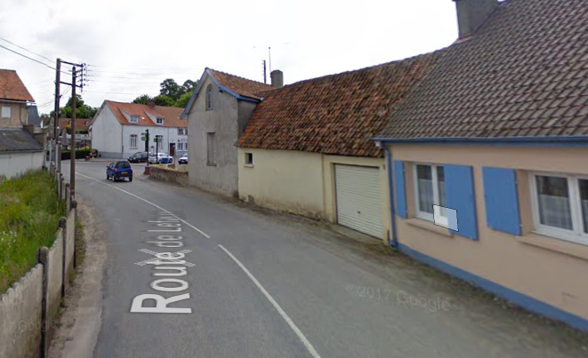
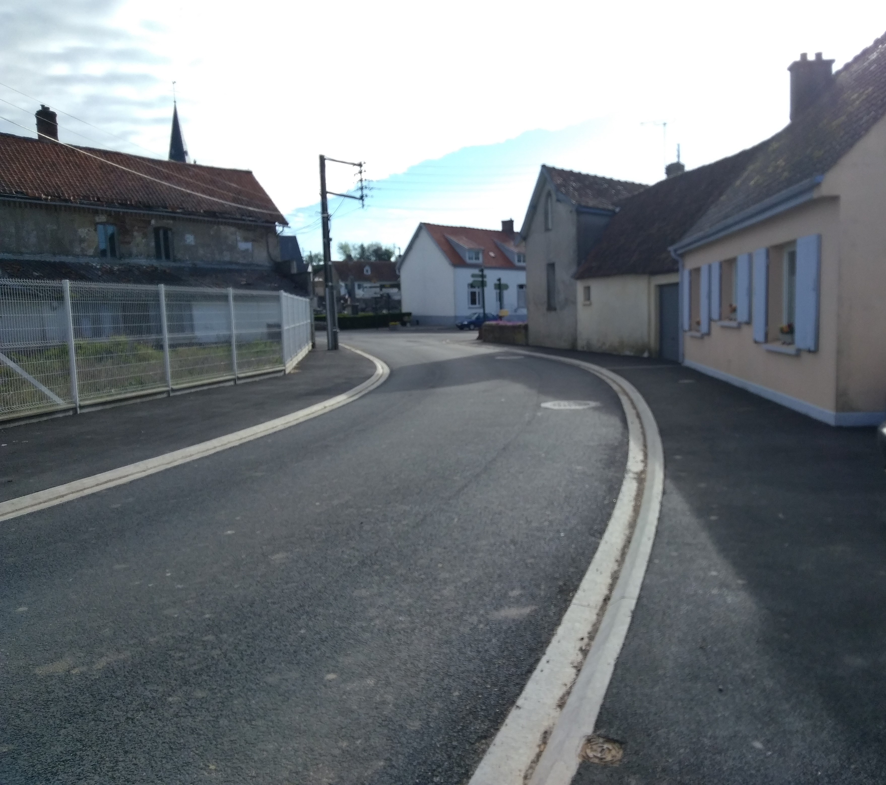
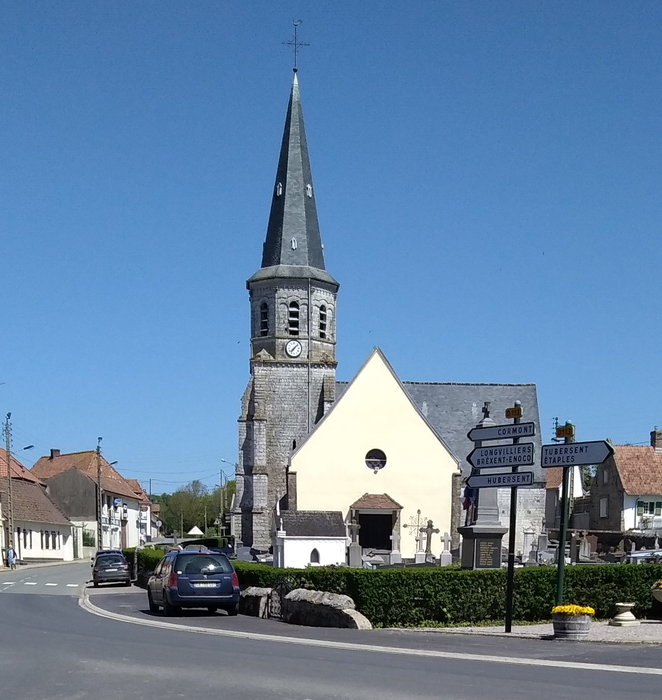

Les réalisations dans la commune
La commune souhaite améliorer et entretenir la voie publique
Réaménagement de la route et des bordurations route de Lefaux et route de Boulogne


Réfection de la rue de Fort Mahon suite à des dégradations naturelles
Rafraîchissement de la facade de l'église du village

Remise à neuf du parc de jeux

Certaines images proviennent de google street view